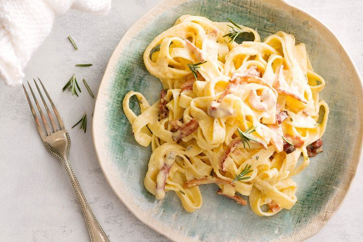

Creamy Fettuccine
Back to Home

Description
Ingredients
- 375g fettuccine pasta
- 175g shortcut bacon rashers, chopped
- 2 garlic cloves, crushed
- 20g butter
- 2 tsp fresh rosemary, finely chopped
- 2 eggs
- 2 egg yolks
- 1/2 cup cooking cream
- 1/3 cup parmesan, finely grated
Instructions
- Boil pasta.
- While pasta is cooking, melt butter in a fry pan over medium heat. Add bacon and cook for 4 minutes or until golden.
- Add garlic and rosemary, and cook for 1 minute.
- Whisk eggs, yolks, cream and parmesan in a bowl. Season with salt and pepper.
- Drain pasta and return to saucepan off the heat.
- Add bacon mixture and egg mixture to pasta. Toss to combine.